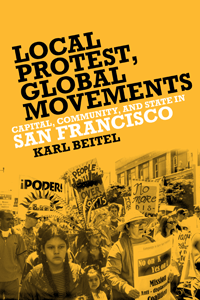

How San Francisco's housing protest movements help us understand global mobilization
How San Francisco's housing protest movements help us understand global mobilization


 How San Francisco's housing protest movements help us understand global mobilization
How San Francisco's housing protest movements help us understand global mobilization

|  |
Local Protest, Global MovementsCapital, Community, and State in San FranciscoKarl Beitelpaper EAN: 978-1-43990-995-9 (ISBN: 1-4399-0995-4) |
"Local Protest, Global Movements is a well-written analysis of recent developments in the nation’s most interesting city, offered from a progressive perspective and enhanced by case studies. This book focuses attention on the larger historical/political/global context, state–civil society relations, the role of protest and urban social justice movements, and citizen participation—providing lessons for cities well beyond San Francisco."
—Chester Hartman, Director of Research, Poverty & Race Research Action Council, and author (with Sarah Carnochan) of City for Sale: The Transformation of San Francisco
A history of the antigentrification and housing rights movement in San Francisco, Local Protest, Global Movements examines the ability of local urban movements to engage in meaningful contestation with private real estate capital and area governmental leaders in the era of urban neoliberalism.
Using San Francisco as an illuminating case study, Beitel analyzes the innovative ways urban social movements have organized around issues regarding land use, housing, urban ecology, and health care on the local level to understand the changing nature of protest formation around the world.
Reconciling the passing of New Left ideals and the emergence of mobilization on a global scale, he assesses the limits of contemporary urban movements as conduits for advancing a radical political program. Beitel argues these limits reflect recurrent problems of internal fragmentation, and the manner in which liberal democratic institutions structure processes of political participation and interest representation.
Excerpt available at www.temple.edu/tempress
"Beitel’s illuminating study of San Francisco’s land use and development politics documents how labor, environmental, and housing activists joined forces in an urban movement to block the worst of neoliberalization in this famously progressive city. His constructive critique of how resource constraints, competing agendas, and state cooptive power changed fusion to fission should be particularly valuable to scholars and activists alike."
—Richard DeLeon, Professor Emeritus of Political Science, San Francisco State University, and author of Left Coast City: Progressive Politics in San Francisco, 1975–1991
"This book is as much a celebration of San Francisco as a brooding about San Francisco's disorganized dissent. Local Protest speaks to academics grappling with the relevance and salience of progressive urban social movements in an era of neoliberal austerity.... Beitel's thoughts about progressive (dis)organization can be useful and instructive.... thought-provoking."
—Urban Affairs Review
"This book...should be of interest for a broad audience of academics and activists."
—American Journal of Sociology
"Local Protest, Global Movements provides a much needed update to the case literature on urban social movements in San Francisco. In so doing, it makes an important contribution to theory about locally based resistance to neoliberal global capital.... Organizers and scholars of urban social movement theory will be interested in Beitel's analysis of what makes movements successful.... The in-depth theoretical discussions make this book best suited to an audience of scholars and graduate students, though organizers and practitioners may be interested in the lessons about the success of social movements."
—Housing Studies
"One of the most original aspects of Beitel's study is its inquiry into the unlikely political etiology of the activism he chronicles.... Through its rich documentation of land use and housing politics in a single city, this book usefully examines the role of neighborhood-based political mobilization in counteracting elite-driven efforts to mold the urban physical and social environment.... [T]his book is a useful addition to the library of any regional scientist interested in the potential and the limits of community-based organizing."
—Journal of Regional Science
"Local Protest, Global Movements details the inspirations, disappointments and intrigues in a range of community-based campaigns against redevelopment and displacement over the half-century from 1956 to 2007.... As a local history written for those who were there it will be endlessly fascinating....The very best part is Beitel’s own struggle with the meanings and implications of San Francisco’s local protests for more comprehensive social change."
— International Journal of Urban and Regional Research
"Beitel’s book [is] a valuable addition to contemporary discourses on urban contestation and an appealing read for urban theorists, social movements scholars, and activists. In his first chapter, Beitel makes the case for taking local movements seriously. He positions his book as an intervention in discourses that depict community organizations and grassroots mobilizations as disabled by neoliberal urbanism…. [The] empirical examinations of conflicts over housing and land use make up the primary substance of the book and are among its greatest strengths…. Beitel offers particularly keen insight into how activists have creatively used the planning and zoning functions of municipal government as points of leverage over urban development, community benefits, and the power of private interests."
— Journal of Planning Education and Research
Acknowledgments
1. Situating San Francisco
2. Constructing San Francisco’s Growth Control and Housing Rights Movements
3. A Framework for the Analysis of Urban Movements
4. Dot-com Boom and Struggles in the Mission
5. The Public-Private Partnership: The Case of Mission Bay
6. Urban Movements and the Question of Urban Governance
7. Local and Global Implications of San Francisco
Notes
References
Index
Karl Beitel is a writer and scholar currently living in San Francisco. His work has addressed urban theory, the global economy, and U.S. foreign policy.
Community Organizing and Social Movements
Sociology
Urban Studies
© 2015 Temple University. All Rights Reserved. This page: http://www.temple.edu/tempress/titles/2258_reg.html.